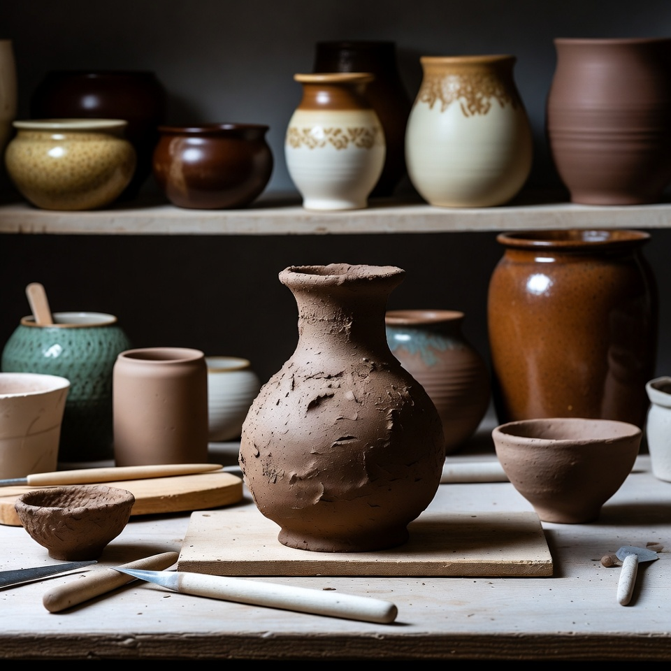
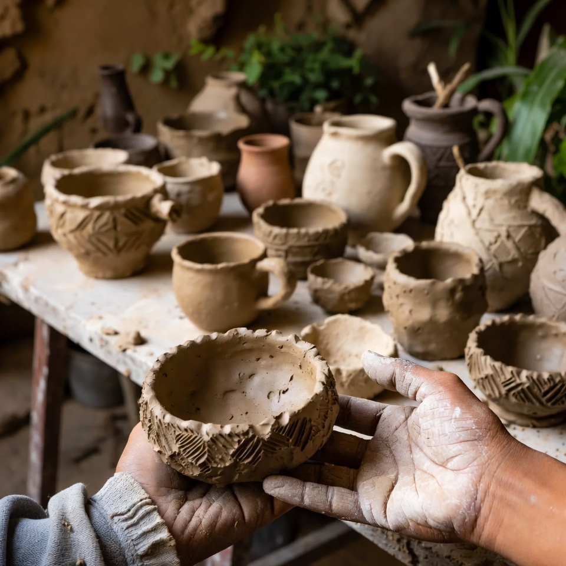

سفالگری، این هنر کهن که ریشه در تمدنهای باستانی ایران دارد، امروز با ورود به عصر مدرن، مسیری تازه را تجربه میکند. هنرمندان معاصر با حفظ اصالتهای سنتی، زبان جدیدی به این هنر بخشیدهاند.
سفالگری مدرن چیست؟
سفالگری مدرن به مجموعهای از رویکردها و تکنیکهای نوین در ساخت، طراحی و لعابکاری سفال گفته میشود که از اواسط قرن بیستم شکل گرفت. برخلاف سفالگری سنتی که بر تکرار الگوهای مشخص استوار بود، سفالگری مدرن بر خلاقیت فردی، بیان هنری و آزمایش با فرمهای جدید تأکید دارد.
در این رویکرد، هنرمند سفالگر نه فقط یک صنعتگر، بلکه یک خالق است که با خاک، آب و آتش، اثری هنری میآفریند. مرزهای میان سفال کاربردی و مجسمهسازی تدریجاً کمرنگ شده و آثاری خلق میشوند که هم زیبایی کاربردی دارند و هم ارزش هنری.
«سفال مدرن، نه انکار گذشته است و نه تکرار آن؛ بلکه گفتگویی تازه با سنت است.»
ویژگیهای سفالگری مدرن
۱. آزادی در فرم و طراحی
در سفالگری مدرن، فرمهای هندسی نامتقارن، اشکال ارگانیک و ترکیبهای غیرمنتظره جایگزین فرمهای کلاسیک شدهاند. هنرمند دیگر محدود به ساخت کوزه، کاسه یا بشقاب با نسبتهای ثابت نیست و میتواند فرمهای کاملاً جدید خلق کند.
۲. لعابهای نوین و رنگهای متنوع
شیمی لعابها در دوران مدرن پیشرفت چشمگیری داشته است. امروزه سفالگران به لعابهایی با جلوههای ویژه مانند کریستالی، مات مخملی، ساتن و لعابهای واکنشی دسترسی دارند که هر کدام بافتی منحصر به فرد ایجاد میکنند.
۳. تلفیق سنت و مدرنیته
یکی از جذابترین جنبههای سفالگری مدرن ایرانی، تلفیق نقوش سنتی مانند اسلیمی، ختایی و کتیبههای فارسی با فرمهای مینیمال و مدرن است. این ترکیب، هویتی منحصر به فرد به آثار سفالگران معاصر بخشیده است.

نمونهای از ترکیب نقوش سنتی با فرمهای مدرن
تکنیکهای رایج در سفالگری مدرن
هنرمندان سفالگر امروزی از روشهای متنوعی برای خلق آثار خود استفاده میکنند. برخی از این تکنیکها ریشه در گذشته دارند و برخی دیگر محصول فناوریهای جدید هستند:
- چرخ سفالگری: روش سنتی که همچنان محبوبترین روش برای ساخت ظروف است.
- ورقهایسازی (Slab Building): ساخت فرمهای هندسی از ورقههای خاک رس.
- فشاری (Coil Building): ساخت لایهبهلایه با رولهای خاک رس.
- قالبگیری: استفاده از قالبهای گچی برای تولید انبوه.
- چاپ سهبعدی: فناوری نوین که امکان ساخت فرمهای پیچیده را فراهم میکند.
- راکو: روشی ژاپنی که به لعابهای تصادفی و دراماتیک منجر میشود.
سفالگری مدرن در ایران
در ایران، سفالگری مدرن از دهههای اخیر رشد چشمگیری داشته است. شهرهایی مانند اصفهان، تهران، یزد و لالجین به قطبهای اصلی این هنر تبدیل شدهاند. هنرمندان ایرانی با الهام از میراث غنی سفالگری، آثاری خلق میکنند که در نمایشگاههای بینالمللی مورد توجه قرار گرفته است.
مدارس هنری و دانشگاهها نیز نقش مهمی در تربیت نسل جدید سفالگران دارند. با آموزش تکنیکهای روز دنیا در کنار حفظ سنتهای بومی، نسل تازهای از هنرمندان شکل گرفته که پلی بین گذشته و آینده این هنر هستند.
💡 نکات کلیدی
- سفالگری مدرن بر خلاقیت فردی و بیان هنری تأکید دارد.
- تلفیق نقوش سنتی با فرمهای مدرن، ویژگی بارز سفال ایرانی است.
- تکنیکهای جدید مانند چاپ سهبعدی، افقهای تازهای گشودهاند.
- آموزش تخصصی، کلید رشد این هنر در ایران است.
جمعبندی
سفالگری مدرن، هنری است که هم ریشه در خاک دارد و هم به آینده مینگرد. این هنر با حفظ اصالتهای کهن، خود را با نیازهای زمانه هماهنگ کرده و به یکی از جذابترین شاخههای هنرهای تجسمی تبدیل شده است. اگر به این هنر علاقهمند هستید، میتوانید از دورههای آموزشی ما در شهر سفالگری بهرهمند شوید.